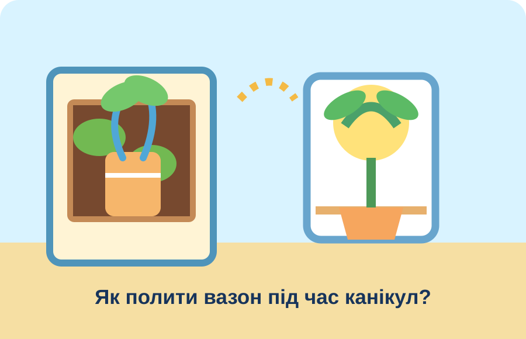

🌱 Вазон під час канікул
Вода потрібна рослині — але не вся одразу!
🎯 Ситуація

У класі росте вазон. На канікулах нікого не буде. Без води рослина засохне, а від надлишку — постраждає.
❓ Ваше завдання
Як поливати вазон потроху, навіть коли нікого немає?
🧩 Спробуйте!
Оберіть дві ідеї: перетягніть або натисніть.
🧺 Обрано: ще немає
✏️ Ваш винахід
Що Ви запропонуєте?